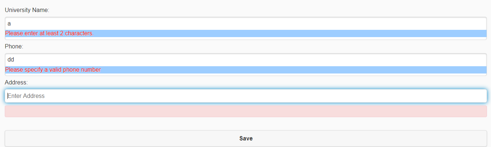
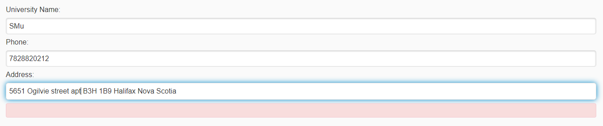
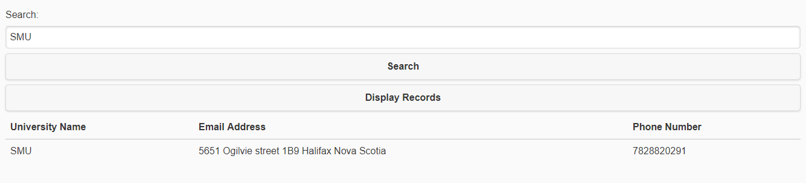
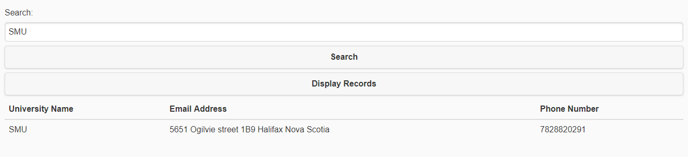

in-place validation
I implement it by jquery-validation and some customized functions
if hte university name is too short or the phone number doesn't fit the
standard Canda phone number , it will violate the validation.

below is the right result:

2. Four $.post in client javascript and Four app.post in server javascript
3. Use mongo db for data operations (use only your id in databa
You can login into my mongodb account to check it ,below is the screenshot:

4. This is the display result
 5. This is the search reslt :

5. This is the search reslt :
